Create or Open a Session
In FCS, a “Session” is a file that links actor information, character information, Maya scene information, and their analysis data together.
After launching FCS, execute [New… (Create New)] or [Open] to access Session data.
Note
By configuring the Session settings first, you can smoothly begin working using buttons within FCS without having to operate Maya separately.
Folder structure created by Create new Session

*Red border: Folders created by Project Folder
*Blue border: Folders created by Actor
*Green border: Folders created by Character
Facial: Location for storing materials such as video and Maya scene data
Assets: Stores Maya project files (under Assets)
RecData: Stores ROM exercise videos and videos to be analyzed by FCS
Scene: Default output destination when exporting animation
SetData: wav output destination when “audio” is selected during animation export
FCS: Project folder where data used for analysis is stored
Actor: Folder with the Actor name (the name you entered)
Character: Folder with the Character name (the name you entered)
RetargetData: Edit data for created Profiles
VideoData: Cache of analyzed videos
.lock: Lock file to prevent conflicts
fcs_session.yaml: File that stores Session information
Creating a New Session
Select File → Session → New…
{kind=link}
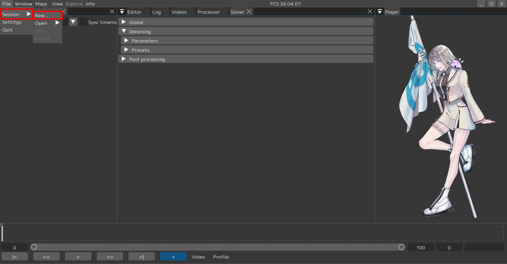
Project Folder Settings
Click the [Browse] button to open the window for specifying the Project Folder.
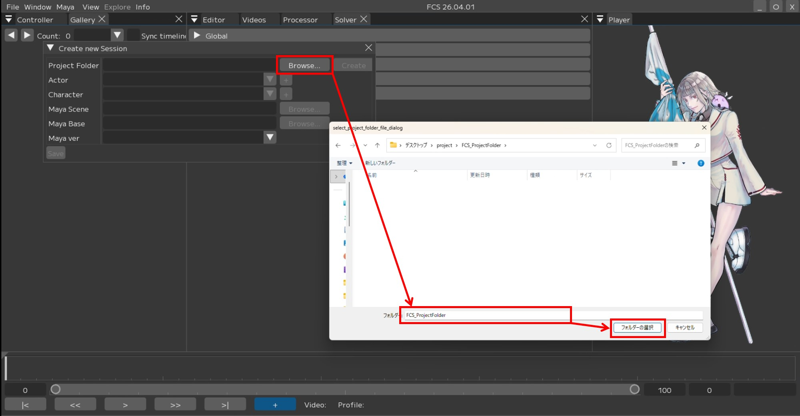
Select any folder where you want to save FCS data
Press [Create] to create the Project Folder.

[Create]
A popup will appear when the creation is successful.
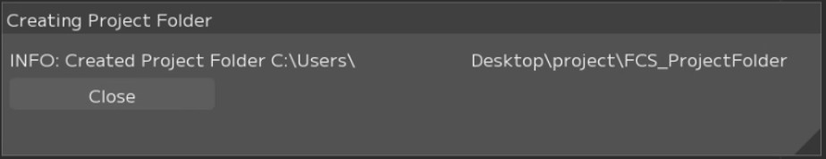
[Close]
The [Facial] and [FCS] folders will be created in Explorer.

Note
After creation, it is recommended to move the Maya scene to be linked into the Project Folder → Facial → Assets folder,
and the videos to be analyzed into the Project Folder → Facial → Recdata folder.
*You can still access them even if they are saved in a different location.
Example: Assets folder
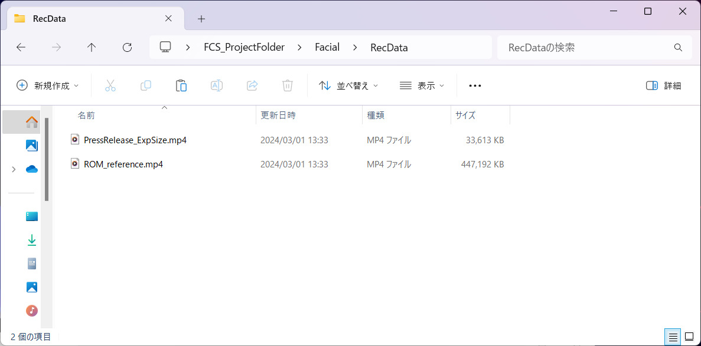
Example: RecData folder
Actor Settings
Click the [+] button to open the [Create new actor folder] window for creating an ActorFolder.
Enter the name you want to register in [Actor Name] and press [Create].
*Actor = Actor name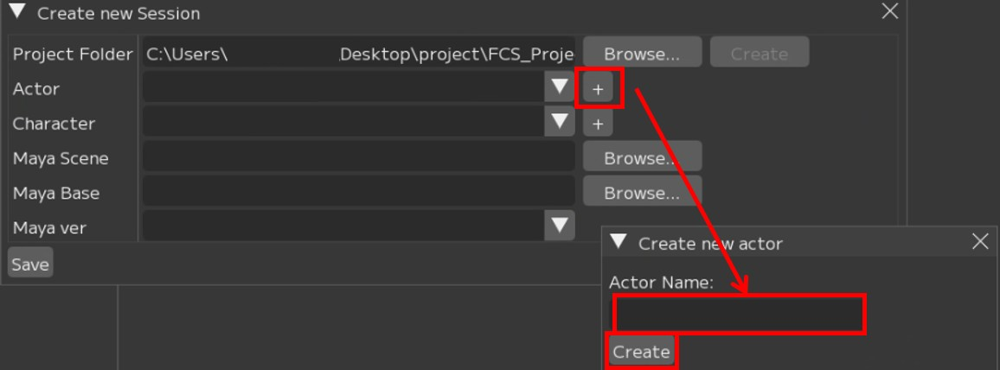
A popup will appear when the creation is successful.
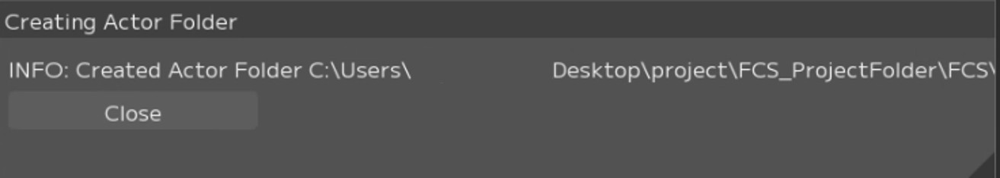
The Actor folder with the entered name will be created directly under the Project Folder in Explorer.
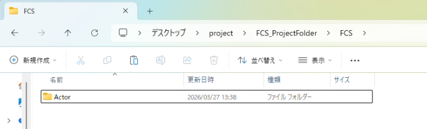
Character Settings
Click the [+] button to open the [Create new character Folder] window for creating a characterFolder.
Enter the name you want to register in the [Character Name] field and press [Create].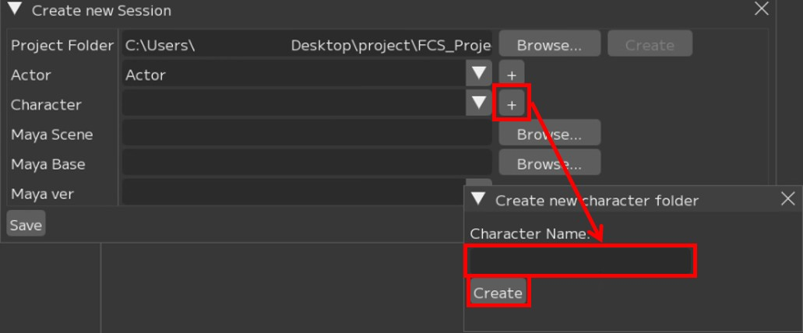
The Character folder with the entered name will be created directly under the Actor folder in Explorer.
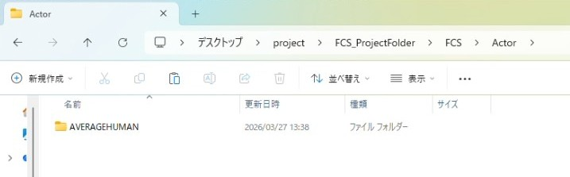
MayaScene Settings
Click [Browse] to open the window for specifying the MayaScene.
Specify the path to the MayaScene data.
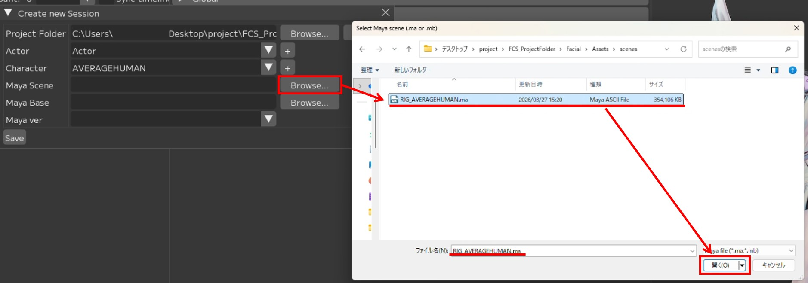
MayaBase Settings
Click [Browse] to open the window for specifying MayaBase.
Specify the location where workspace.mel resides (the location registered in the Maya scene’s project settings).Attention
The popup window in FCS does not display workspace.mel
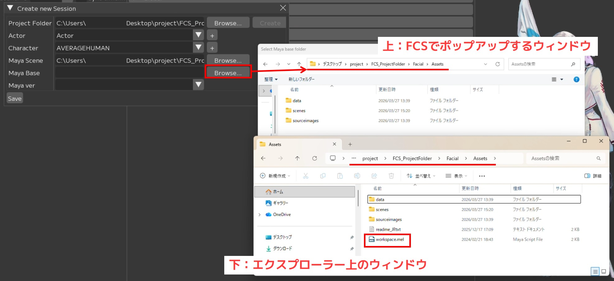
MayaVer Settings
Specify the Maya version used to create the Scene.
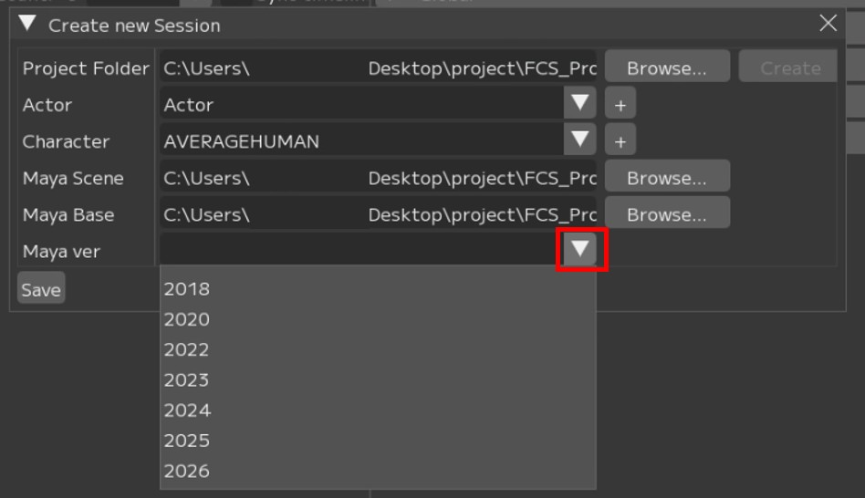
After completing all entries, press [Save].
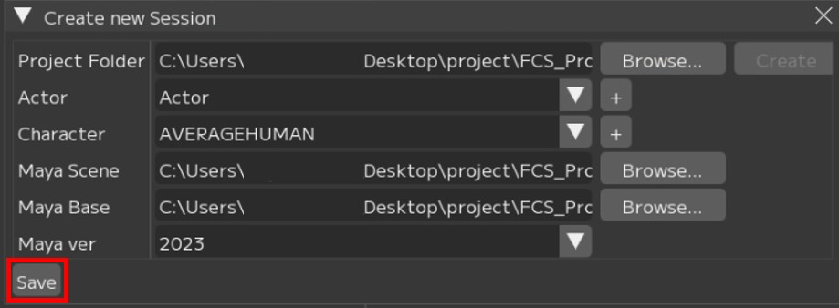
[Save]
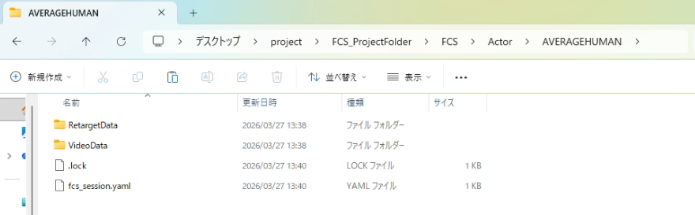
The fcs_session.yaml (FCS file) will be created directly under the character folder in Explorer.
Note
The .lock file prevents access from other users during work.
It is automatically deleted when the application exits normally.Note
If the .lock file remains due to an abnormal termination,
delete it from the popup when launching FCS,
or delete the .lock file directly in Explorer.
{kind=link}
{kind=link}
{kind=link}
{kind=link}
{kind=link}
{kind=link}
{kind=link}
{kind=link}
{kind=link}
{kind=link}
{kind=link}
{kind=link}
{kind=link}
If a Session has already been created
Open the Session from the history or from the fcs_session.yaml file.
Opening from history
If you have previously opened a Session, the history will be displayed under File → Session → Open.
Click the data you want to work with.
{kind=link}
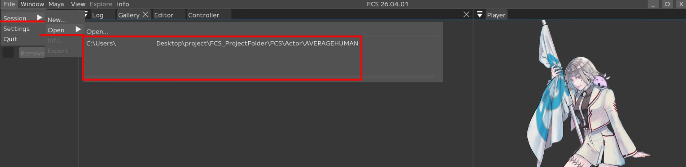
Opening from the fcs_session.yaml file
File → Session → Open → Open…
When the OpenSession window opens, local and network drives will be displayed.Select and open the fcs_session.yaml file located directly under the Character folder.
{kind=link}
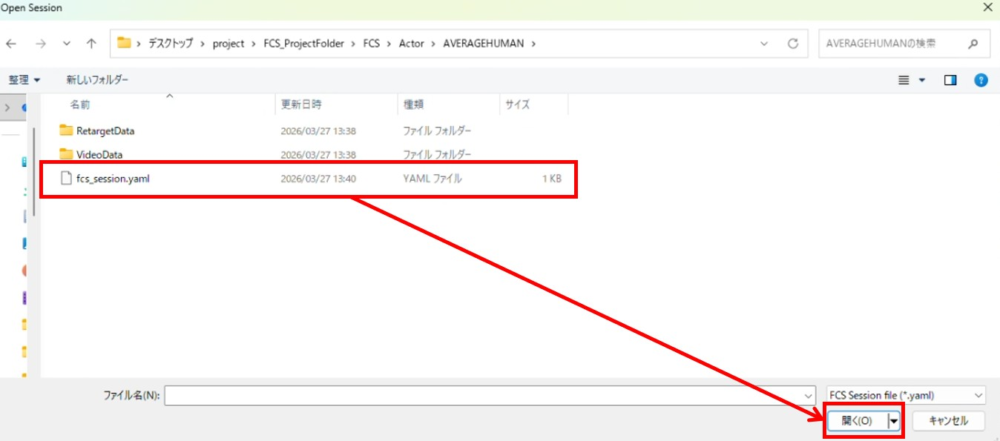
Warning
After creating or opening a Session, you cannot create or open another Session consecutively.
If you want to open a different Session, close the current Session, restart FCS, and then open the desired Session.
If the “MayaVer Settings” are not applied
The settings configured during Session creation can be checked via File → Session → info.
{kind=link}
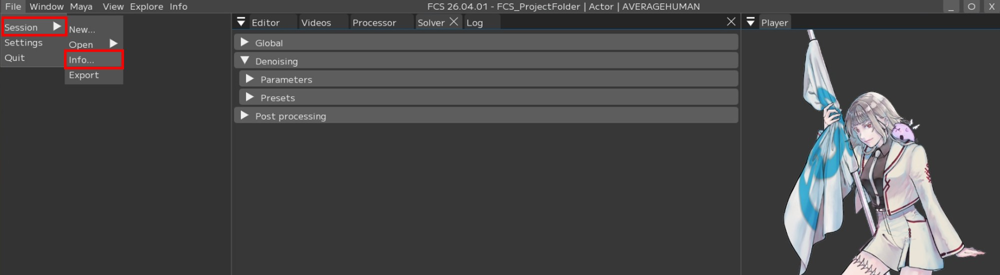
If the MayaVer set in New Session is not reflected in the info, right-click Maya Version on the info screen and change it from Edit.
{kind=link}
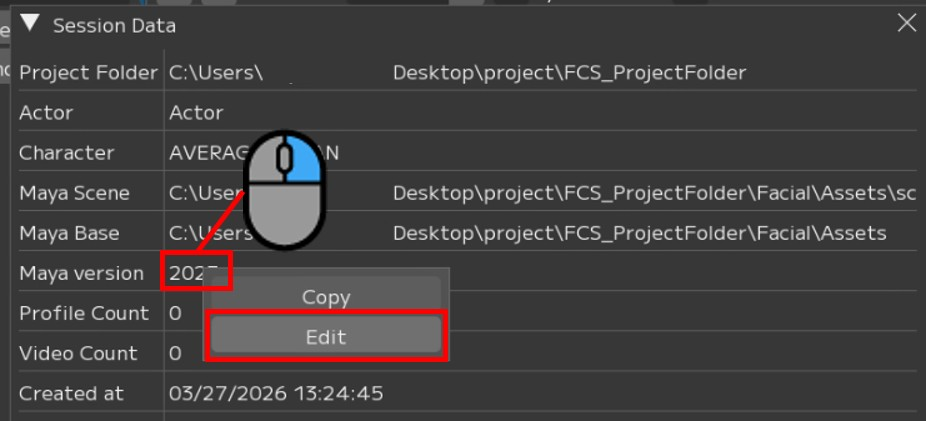
{kind=link}
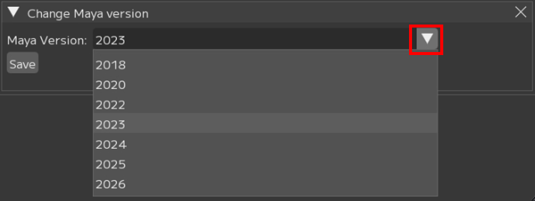
Attention
Be sure to press the Save button after changing settings